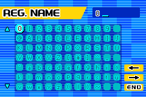

Sonic Advance 2 (USA) (En,Ja,Fr,De,Es,It)
Flash 512K gbakit Built-In VRAM Tile Sheet 💾 MultiBoot 🎮 4P Link
Cartridge Identity
- Game Code
A2NE(FamilyA2N)- Header Title
SONICADVANC2- Maker / Revision
78/ rev0- ROM Size
- 16.0 MiB (16,777,216 B)
- Save Media
Flash 512K- SHA-256
f2b7a3329401a02706d87560f61da3e6da2ca42f2b9ae98a86d78e0529cb7260- Engine / SDK Group
comm-016(22 families)
Screenshots


Link Cable & Multiplayer Communications
This title contains detected communication capabilities: 💾 MultiBoot 🎮 4P Link.
Detailed protocol specifications, SIO registers, Joybus commands, and MultiBoot sequences are documented in the Link & Multiplayer Reference.
- Multi-Player SIO (4P)
- 16-bit ring network · SIOCNT (
0x04000128) literals:0x000440,0x0007d0,0x000850· SIODATA32/SIOMULTI0 (0x04000120) literals:0x00094c,0x0009b0,0x000a20 - Single-Cart MultiBoot
- Single-Cartridge MultiBoot (Download Play) client/server handler · Thumb SWI 0x25 (
0xDF25):0x09712a,0xb31e88,0xc2c402,0xc3406a
Battery Save Support in gbakit
Built-in definition (A2NE)
gbakit save verify A2NE save.sav
gbakit save decode A2NE save.sav
gbakit save fix A2NE damaged.sav -o repaired.savROM Assets, Compression & Audio
- BIOS Compression
- LZ77 (
0x10): 14 streams · RLE (0x30): 41 streams - ROM Pointer Tables
- 198 tables (3 pointing to validated compressed streams)
- SDK Backup Tags
FLASH512_V130- VRAM / Palette Snapshot
- 49 non-zero 8×8 tiles · 8 palettes · Direct ROM matches: 1 VRAM blocks, 0 palette blocks
Asset Map (formatkit.asset-map.v1)
Download A2NE-r0-f2b7a3329401a027.asset-map.json.gz (155,491 B (151.8 KiB)) Verified PASS · 24.41% coverage
| Metric | Bytes / Value | Entries |
|---|---|---|
| Identified | 779,681 B (761.4 KiB) (4.65%) | 1,337 |
| Mapped | 0 B (0.00%) | 0 |
| Opaque | 3,316,112 B (3.16 MiB) (19.77%) | 1 |
| Unknown | 12,681,423 B (12.09 MiB) (75.59%) | 1,278 |
| Total ROM Size | 16,777,216 B (16.00 MiB) | 2,616 |
| Coverage % | 24.41% | — |
| Entries w/ Code Refs | 1,427 / 2,616 (54.55%) | — |
Top Identified Formats: compress.bios-lz77 (9 · 329,299 B (321.6 KiB)) · gfx.gba-palette (1,228 · 226,976 B (221.7 KiB)) · compress.bios-huffman (1 · 114,454 B (111.8 KiB)) · compress.bios-rle (96 · 92,084 B (89.9 KiB)) · rom.multiboot (1 · 12,620 B (12.3 KiB)) · audio.m4a-song-table (1 · 4,056 B (4.0 KiB)) · gba.rom-header (1 · 192 B)
Largest unknown Extents (Headerless / Custom Asset Candidates)
| Offset | Size | Shannon Entropy | Code Refs |
|---|---|---|---|
0x00AEA7A8 | 858,820 B (838.7 KiB) | 6.588 bits/B | 0 |
0x00200830 | 854,704 B (834.7 KiB) | 2.802 bits/B | 0 |
0x002E4068 | 638,872 B (623.9 KiB) | 2.984 bits/B | 0 |
0x00380020 | 535,540 B (523.0 KiB) | 2.747 bits/B | 0 |
0x00678F20 | 462,568 B (451.7 KiB) | 4.404 bits/B | 0 |
gzip -dk A2NE-r0-f2b7a3329401a027.asset-map.json.gz && gbakit map verify rom.gba A2NE-r0-f2b7a3329401a027.asset-map.json
gbakit assets export rom.gba --asset-map A2NE-r0-f2b7a3329401a027.asset-map.json -o out/Text, Fonts & Scene Data
- Primary Text Encoding
- Plain ASCII (uncompressed) (
114ASCII strings ·1Shift-JIS runs) - Font & VWF Indicators
- VWF Width Table 1bpp Font · BIOS SWIs: BitUnPack
0x10:10· LZ770x11/12:3· Huffman0x13:2· RLE0x14/15:4 - Scene & Packaging
37ROM pointer tables (≥32 entries,9≥200) ·0relativeu32TOCs ·254OAM metasprite hits
Hardware MMIO Subsystems
ppu_display0x80019a0save_bus_sram_flash0x80967c0,0x8096a14
Regional Variants & Revisions (Family A2N)
- Sonic Advance 2 (Europe) (En,Ja,Fr,De,Es,It) (
A2NP, 16 MiB) - Sonic Advance 2 (Japan) (En,Ja,Fr,De,Es,It) (
A2NJ, 16 MiB) - Sonic Advance 2 (Japan) (En,Ja,Fr,De,Es,It) (Virtual Console) (
A2NJ, 16 MiB) - Sonic Advance 2 (USA) (Beta) (2002-10-25) (
A2NE, 16 MiB)